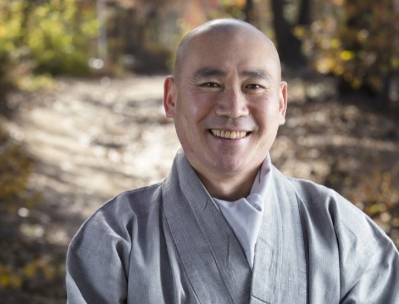
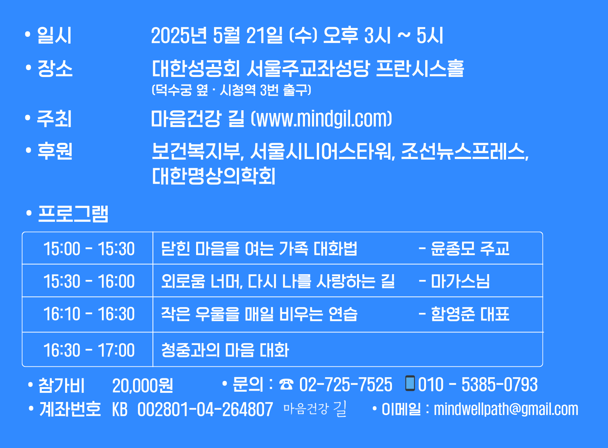
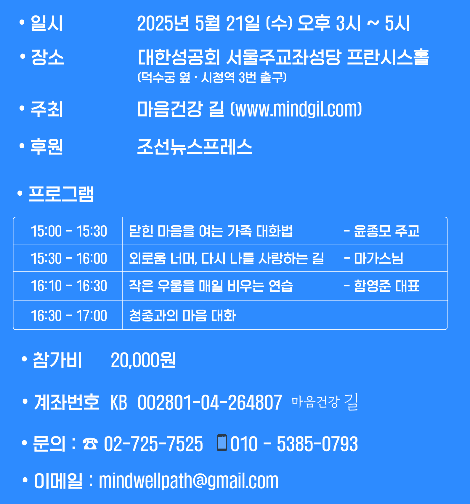
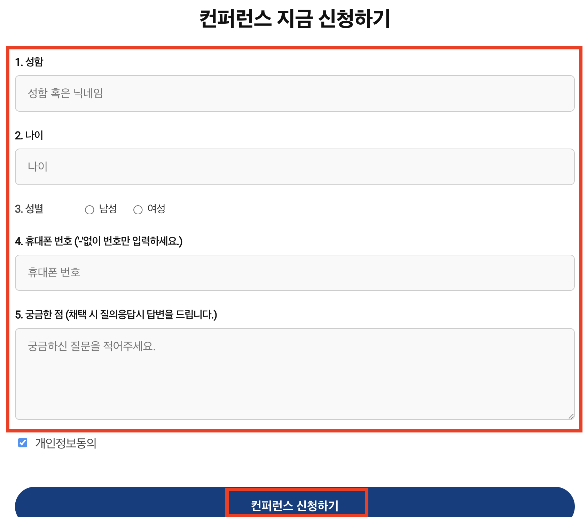
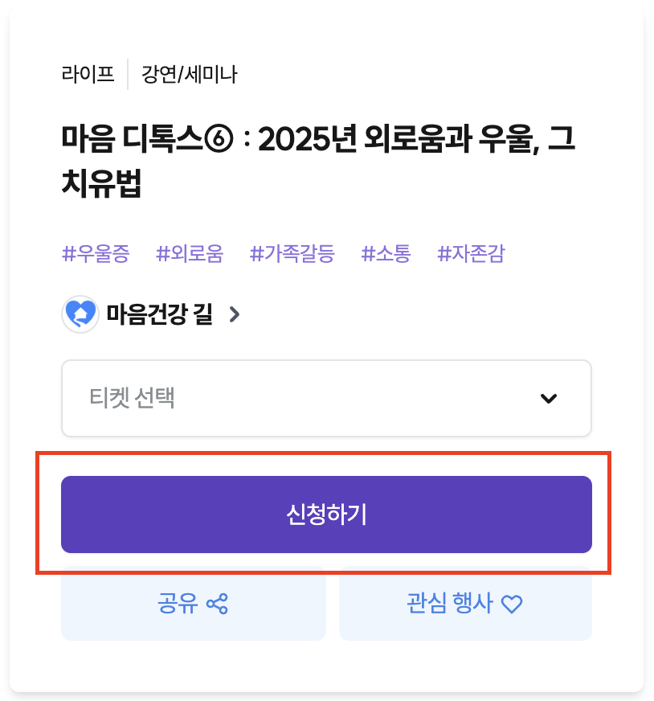

세 분의 전문가 모두 깊은 삶의 통찰을 나눠주셔서 감동이 컸습니다.
특히 마가스님의 생활 수행법은 일상에서 바로 실천할 수 있어 큰 도움이 됐어요.
🎙️ 강연 소개
 이 주최하는
이 주최하는
병원 밖 마음 치유공간
'마음 디톡스'
6번째 컨퍼런스 주제는
“2025년 외로움과 우울, 그 치유법"
입니다.
세 분의 연사가
자신의 깊은 상처와
치유 여정을 통해
외로움, 고립, 우울을
어떻게 극복했는지
생생하게 들려드립니다.
또한 일상 속에서
감정을 다스리고 마음을 회복하는
실천 가능한 치유법을 제시합니다.
🤵🏼♂️ 연사 소개
윤종모 주교
대한성공회 주교
"어린 시절 가족 붕괴와 외로움 속에서 방황하다 뒤늦게 사제가 되었고,삶과 신앙의 깊은 골짜기를 지나 명상과 영성으로 평안을 찾아냈다.
이번 강연에서 가족 안에서 시작된 상처를 어떻게 치유할 수 있는지 안내한다.
"

마가스님
자비명상 대표
"청소년기 아버지에 대한 깊은 원망과 가난 속에서 방황하다,출가와 수행을 통해 마음속 증오를 감사로 승화시켰다.
유장하고 깊은 목소리로 무너진 자존감을 바로 세우는 길을 들려준다.
"

함영준 대표
마음건강 길 대표
"부모가 없이 조부모 밑에서 자라며 외로움을 체화했으나,사회적 성공 뒤 우울과 싸우면서 스스로 삶을 다시 세웠다.
일상 속 우울감을 사라지게 하는 실천적 치유법을 전한다.
"
이 세분 모두 가족 안의 외로움, 삶의 좌절,
그리고 우울증을 몸소 겪고 극복한 뒤
많은 이들과 체험을 나눈 분들입니다.
📅 행사 정보


🌷 프로그램 하이라이트
풍부한 사회적 경험과 전문적 지식,
생생한 사례와 깊이 있는 공감,
우울감, 고립감, 자존감 회복을 위한
실천 노하우 공개,
강연 후 청중과 함께 하는
자유로운 소통 시간을 통해
가족 안의 외로움과
고독, 우울을 치유하는 시간,
내 안의 평화를 다시 찾는 길,
지금 함께 걸어봅시다.
컨퍼런스 신청 방법
원하는 조건에 맞는
방식을 안내드립니다.
가장 간편하게 이용할 수 있는 방식으로
[계좌번호: KB 002801-04-264807 마음건강길]
로 입금 진행해주시면 됩니다
※ 현금영수증 발행 가능
문의전화 : 02-725-7525, 010-8798-2396
[계좌번호: KB 002801-04-264807 마음건강길]
로 입금 진행해주시면 됩니다
※ 현금영수증 발행 가능
문의전화 : 02-725-7525, 010-8798-2396
단, 정원 160석 티켓 여분이 남아 있을 경우 가능합니다.
티켓 판매 상황을 알아보려면 문의해주십시오.
문의전화 : 02-725-7525, 010-8798-2396
티켓 판매 상황을 알아보려면 문의해주십시오.
문의전화 : 02-725-7525, 010-8798-2396
컨퍼런스 신청 방법

STEP 1. 신청폼 작성
[하단 신청폼]에 이름, 연락처 등을 간단히 기입하면
접수 후 자동으로 안내 페이지로 이동됩니다.

STEP 2. 결제 및 확인
안내된 링크로 참가비 결제를 완료하시면 최종 예약이 완료됩니다.
확인 문자와 함께 프로그램 안내를 드립니다.
STEP 3. 프로그램 참가
안내된 일정에 맞춰 현장 또는 온라인으로 참여해 주세요.
따뜻한 분위기에서 여러분을 기다리고 있겠습니다.
초대합니다!
계절의 여왕 5월
병원 밖 마음 치유공간
'마음 디톡스'에서
치유의 길을 함께
걸어보지 않겠습니까?
참여 마감 | ( )
컨퍼런스 지금 신청하기
📷 지난 마음디톡스


💌 프로그램 후기
참가자 분들의 실제 후기
참가자 분들의 실제 후기
참가자 분들의 실제 후기
참가자 분들의 실제 후기

[비바 2080] 우울 불안 공황에 ‘마음디톡스’… “마음이 살아야 몸이 산다, 그리고 ‘괜별그’ 마인드로 무장하라”
함영준 ‘마음건강 길’ 대표가 운영하는 ‘마음디톡스 특강’이 15일 오후 대한성공회 서울주교좌성당 프란시스홀에서 열렸다....

[이 사람] 《우울탈출법》 펴낸 치유 저널리스트 함영준
언론·정부 일 하며 어느 순간 극심한 '소진' 지나 몸과 마음 무너져 ⊙ 자기 돌봄의 지혜 담은 신간 《우울탈출법》 펴내....

[함영준의 마음PT] 우울증·공황장애·불면증…전문가가 전하는 치유 솔루션
마음의 병, 약으로만 해결될까? 우울증, 공황장애, 불안장애, 불면증…. 이른바 마음의 병이 요즘 정말 많다....
외로움과 우울, 어떻게 치유할까? ‘마음디톡스 컨퍼런스’서 길 찾는다 
이번 행사는 2018년 시작되어 꾸준히 이어져온 ‘마음디톡스’ 프로그램의 일환으로...

마가스님 자비명상특강 
최근 한국인들 마음건강의 적신호에 깊은 공감과 소명을 느껴 마가스님과 윤종모 주교님을 모시고 3인3색 토크쇼를 열었다...

함영준 대표님 마음건강 특강
함영준 대표님 특강! 본인 스스로 심한 우울증을 겪고 나서 마음건강의 중요성을 절감하고...

우울증 극복을 통한 마음 건강 회복 이야기 
겨우 한 살 때, 아버지를 사고로 잃었고, 어머니는 재혼 후 나를 떠났다. 조부모님의 극진한 사랑 속에서 성장했으나...


📣 매체 소개
 은 ‘건강한 마음, 행복한 인생’을 목표로 100세 시대에 맞는 뉴스·정보를 제공하는 디지털 매체로 2019년 창간되었습니다.
은 ‘건강한 마음, 행복한 인생’을 목표로 100세 시대에 맞는 뉴스·정보를 제공하는 디지털 매체로 2019년 창간되었습니다.
창간 직후 뇌과학, 정신의학, 심리학, 종교, 명상, 문화예술 전문가들의 강연을 통해 현대인의 힘든 마음을 치유하고 충전하는 컨퍼런스 ‘마음 디톡스’를 5번 개최해 왔습니다.
그러나 2020년 닥친 코로나19 사태로 컨퍼런스는 중단되었으나 2025년 5월, 다시 시작됩니다.
여러분의 관심과 성원 부탁드립니다.
지난 마음디톡스 살펴보기